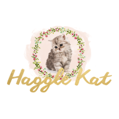

HaggleKat (www.hagglekat.com) is a bot that scrapes my wife's favorite retail sites, figures out the best deals, then posts them to her blog.
When it was fully active, the bot was coded in a mix of R, knitr, RMarkdown, Wordpress, and Bash.
I've included some files from an early beta version of hagglekat. I'm currently redoing the bot in Python with a stronger ML backend.
The file nordstrom.r shows an example of pulling data from Nordstrom's site
Contact me if you have any questions!